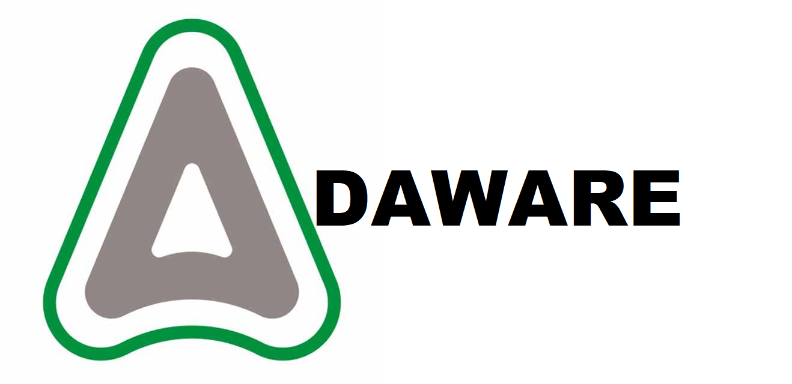

Bienvenido
ADAWARE
"LOS SASTRES DEL SOFTWARE"

IdearioNuestro objetivo, es poder realizar software adaptándose a las peticiones y requisitos de los clientes, no importan los que sean. Ser una empresa experta en desarrollo de software por la calidad y eficaz manera de desarrollar aplicaciones que ayudan a nuestros clientes a facilitar su forma de vida, puesto que pensamos a futuro y damos mayor atención al proyecto al enfocarnos con pocos proyectos a la vez, esto para brindar una mejor experiencia, por lo cual nos consideran originales al momento de desarrollar una aplicación y expertos en el tema que promueven el respeto, la colaboración, la responsabilidad, la pasión e integridad.Somos una empresa de desarrollo de software por encargo, garantizando la calidad del producto a través de rigurosos procesos de pruebas dentro de lo que nos es posible, que mejora cada vez más sus métodos en el desarrollo de software con cada encargo, con el fin de apoyar a nuestros clientes a facilitar su forma de vida a través de la tecnología a través del desarrollo de todo tipo de software para todo tipo de propósitos. |
Nuestros Casos de ExitoEl primer producto que creamos fue una agenda hecha en java, fue creada con el objetivo de ayudar a los estudiantes a organizarse correctamente y no olvidar sus tareasEl segundo producto que creamos fue con la ayuda de la empresa "FINUTO". Este producto fue un trabajo especial para un individuo muy rico, el cliente pidio una aplicacion capas de organizarle el dinero al momento de meterlo a su caja fuerte. Finalmente lo logramos, nosotros hicimos el software y el S.O que operaba la caja fuerte y FINUTO se encargo de realizar la caja fuerteEl unico servicio que realizamos fue algo para FINUTO, nos pideron que hicieramos un plugin que ayudara a su television a organizar las contraseñas que el usuario colocaba |
Nuestros productos y serviciosEn el diseño grupal los grupos pueden ser analizados en términos de desempeño de la misma forma que la organización a la que pertenecen: Éste será igualmente el resultado de la combinación de una serie de componentes: Los productos de la empresa, los procesos y sistemas de trabajo, la forma en la que se ejerce el liderazgo, la calidad y cantidad de tecnología puesta al servicio del grupo de empleados que se analiza, entre otros elementos permitirán un mayor o menor aprovechamiento del talento de los miembros del equipo. La combinación de estos dos factores debe estar orientada a aprovechar un ambiente de negocios propicio o de contrarrestar los efectos de un ambiente adverso para poder maximizar sus resultados.En el diseño individual el desarrollo del talento individual, será la base para potenciar el desempeño organizacional, pero este esfuerzo se puede ver mermado si las características de la estructura, es decir los elementos asociados a la gestión del negocio o las características del entorno de negocios no apoyan su desarrollo. El desarrollo del talento de los individuos que integran la organización deberá orientarse al logro de los resultados y se transformará en fuerza productiva si los procesos, los sistemas de trabajo, la filosofía y cultura organizacional, la forma en la que se ejerce el liderazgo, los sistemas de recompensa, la tecnología y las funciones de los diferentes departamentos están dispuesta en forma armoniosa para orientar su esfuerzo hacia el cumplimiento de dichos resultados. |